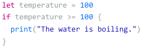
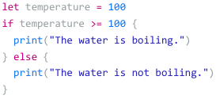
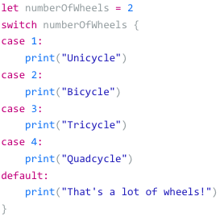

Logical Operators
- !=
- The values must not be equal to each other
- >
- Value on the left must be greater than the value on the right
- >=
- Value on the left must be greater than or equal to the value on the the right
- (shift) .
- Value on the left must be less than the value on the right
- (shift) .=
- Value on the left must be less than or equal to the value on the right
- &&
- AND-The conditional statement on the left and right must be true
- ||
- OR-The conditional statement on the left or right must be true
- !
- NOT-Returns the opposite of the conditional statement immediately following the operator
If Statements
- Runs the block of code below if the statement is trueand if not, skips it and runs the next

If-Else Statements
- By adding else clause to an if statement, can specify a block of code to execute if the condition is not true

Switch Statements
- To simplify a long chain of if, else if, and else statements

Ternary Operator